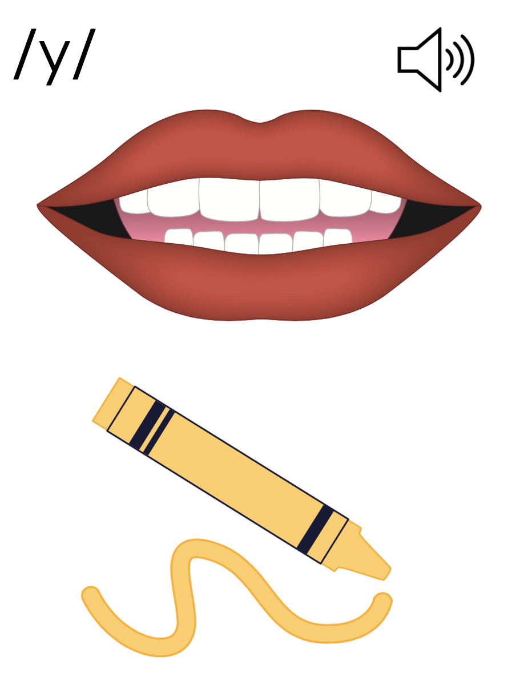
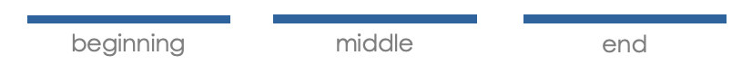
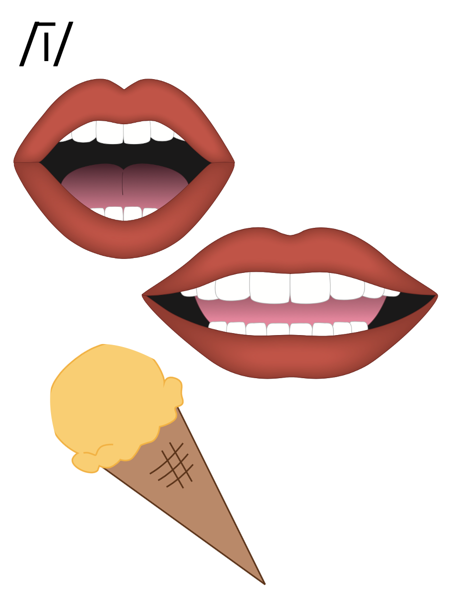

Lesson 73
y /ī/

ufliteracy.org


Lesson 73
y /ī/


See UFLI Foundations lesson plan Step 1 for phonemic awareness activity.


See UFLI Foundations lesson plan Step 2 for student phoneme responses.


y
dge
g
tch
ch
-ed
c
a
i
o
e
u
nk
ng
wh
ph
th
sh
ck


See UFLI Foundations lesson plan Step 3 for auditory drill activity.

No slides needed for auditory drill.


See UFLI Foundations lesson plan Step 4 for blending drill word chain and grid.
Visit ufliteracy.org to access the Blending Board app.


See UFLI Foundations lesson plan Step 5 for recommended teacher language and activities to introduce the new concept.
y
yes
yellow


y

my
beginning
middle
end
fly
sky
y
i_e
i
y

Handwriting paper for letter formation practice. Use as needed.
See UFLI Foundations manual for more information about letter formation.

my
fry

by
fly
sky
cry
pry
sty
sly
spy
try
why

See UFLI Foundations lesson plan Step 5 for words to spell.
Handwriting paper to model spelling.

See UFLI Foundations lesson plan Step 5 for words to spell.
Handwriting paper for guided spelling practice.


Insert brief reinforcement activity and/or transition to next part of reading block.

Lesson 73
y /ī/

New Concept Review

See UFLI Foundations lesson plan Step 5 for recommended teacher language and activities to review the new concept.
y
yes
yellow
y
my
beginning
middle
end
fly
sky
y
i_e
i
y
try
why
fly
myself


See UFLI Foundations lesson plan Step 6 for word work activity.
Visit ufliteracy.org to access the Word Work Mat apps.


See UFLI Foundations lesson plan Step 7 for irregular word activities.
The white rectangle under each word may be used in editing mode. Cover the heart and square icons then reveal them one at a time during instruction.

See UFLI Foundations manual for more information about reviewing irregular words.

woman
Lesson 69+
O represents the /oo/ sound.
A represents the /ǝ/ sound.
The white rectangle under the word may be used in editing mode. Cover the heart and square icons then reveal them one at a time during instruction.
women
Lesson 69+
O represents the /ĭ/ sound.
E represents the /ǝ/ sound.
The white rectangle under the word may be used in editing mode. Cover the heart and square icons then reveal them one at a time during instruction.
move
Lesson 70+
O represents the /ū/ sound.
The final E is silent but does not follow the long vowel VCe pattern.
The white rectangle under the word may be used in editing mode. Cover the heart and square icons then reveal them one at a time during instruction.
both
Lesson 72+
O represents the /ō/ sound. Since both is a CVC (closed syllable) word, it should be /ŏ/.
The white rectangle under the word may be used in editing mode. Cover the heart and square icons then reveal them one at a time during instruction.
Handwriting paper for irregular word spelling practice. Use as needed.
See UFLI Foundations manual for more information about reviewing irregular words.
Teach
The orange star indicates these are new irregular words that need to be introduced.
See UFLI Foundations manual for more information about teaching irregular words.
four
Lesson 73+
OUR represents the /or/ sound.
The white rectangle under the word may be used in editing mode. Cover the heart and square icons then reveal them one at a time during instruction.
fourth
Lesson 73+
OUR represents the /or/ sound.
The white rectangle under the word may be used in editing mode. Cover the heart and square icons then reveal them one at a time during instruction.

Handwriting paper for irregular word spelling practice. Use as needed.
See UFLI Foundations manual for more information about teaching irregular words.


See UFLI Foundations lesson plan Step 8 for connected text activities.
The fly landed by the plate.
I was trying to dry myself in the sun.
Sky was in fourth place by the end of the race.
See UFLI Foundations lesson plan Step 8 for sentences to write.

The UFLI Foundations decodable text is provided here. See UFLI Foundations decodable text guide for additional text options.
Plane Race
Tyrell and Franklin love planes. They love to see them fly in the sky. Once, Tyrell and Franklin went to see four planes race. There was a red plane, a white plane, a pink plane, and a black plane. “I bet the red plane will win!” said Tyrell. “I think the white one will win!” said Franklin.
Tyrell and Franklin spy the planes as they fly by in the sky. In the end, the black plane made it to the finish line. “Oh well! The red and white planes can try to win next time,” said Tyrell.

Insert brief reinforcement activity and/or transition to next part of reading block.